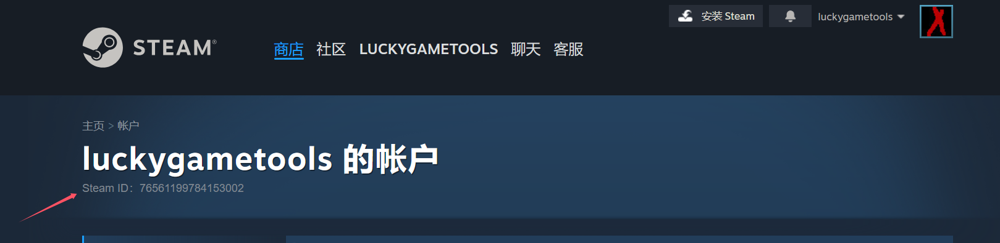

資料庫
什麼是 SteamID？怎麼查看自己的編號
SteamID 標識的是你的帳號，不是遊戲 AppID。
一句話定義
SteamID 是 Steam 給每個帳戶分配的標識。官網「帳戶」頁標題下方那串長數字（多半以 7656 開頭）就是 SteamID64。它用來識別玩家，不是遊戲的 AppID。
同一個帳戶還可以表示成較短的 SteamID32（AccountID）或 SteamID3。本站工具箱能在這些格式之間轉換。下面先說明怎麼在官網看到自己的 SteamID64。
怎麼查看自己的 SteamID
1
打開 Steam 官網帳戶頁（商店右上角帳戶選單 → 帳戶詳細資訊）。標題「某某的帳戶」下方會顯示 Steam ID。下圖以 LuckyGameTools 帳戶為例。
帳戶詳情頁標題下方的 Steam ID，就是自己的 SteamID64。

2
社區個人資料連結
steamcommunity.com/profiles/ 後面的數字，同樣是 SteamID64。3
若要在 SteamID64、SteamID32、SteamID3 之間轉換，使用本站 SteamID 查詢工具 或 32/64 互轉。
術語對照
SteamID64
帳戶頁上的長數字，例如 7656119…
SteamID32
較短的 AccountID，可用工具從 64 位換算出來
AppID
遊戲或應用的編號，和帳戶 SteamID 不是同一件事
它和 LuckyGameTools 的關係
- 分享庫、家庭共享或請人協助排查時，常會用到你的 SteamID64。
- 工具箱提供純前端轉換，不需要把帳戶密碼交給網頁。
- 查遊戲清單請用 AppID；查自己是誰請用 SteamID。
帳戶頁上的 SteamID64 是公開標識，仍請避免把登入令牌、CDK 或神秘代碼貼到公開場合。
常見誤解
SteamID 和遊戲 AppID 是一樣的嗎？
不一樣。SteamID 指向帳戶，AppID 指向遊戲或應用。
帳戶詳情裡的 Steam ID 是哪一種？
官網帳戶頁顯示的是 SteamID64，也就是以 7656 開頭的那串數字。
為什麼還要 SteamID32？
部分工具和舊版格式使用較短的 AccountID。用本站工具箱即可互轉，不必手算。